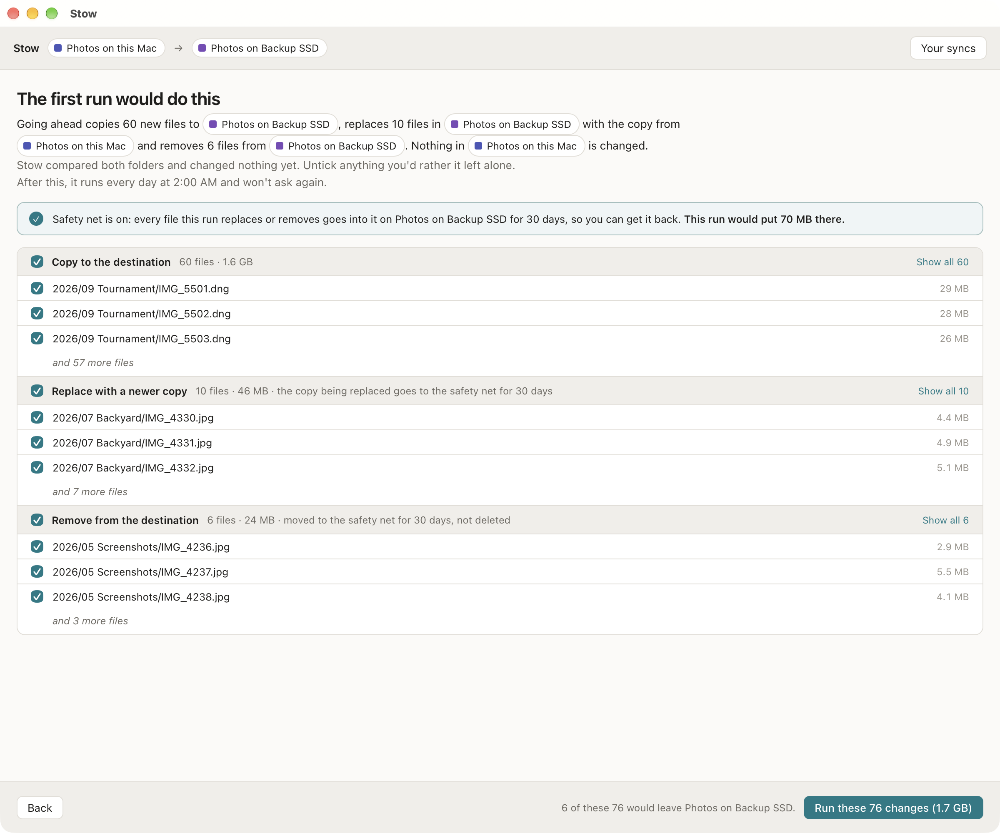

Say it in a sentence.
No flags, no modes with odd names. Each choice says what happens to a file you delete.
Stow keeps a folder on your computer and a folder on another drive the same. You set it up by answering a few questions, and it tells you what it will do in a sentence before it does it.
14 days free, with everything working. Then $39 once, for 3 computers. 30-day refund, no questions asked.
One on this computer, one on an external drive, a second drive, or a network share you've already connected.
Make it match, only ever add, or keep both in step. Then pick when: when you click, on a schedule, or whenever the drive is plugged in. Stow says it all back in one sentence.
The first time, you see every file it would copy, replace or remove, and you can untick any of them. After that it runs on its own.
No flags, no modes with odd names. Each choice says what happens to a file you delete.
The first run lists every file it would copy, replace or remove, in groups you can untick. Anything you untick stays where it is.
Every file Stow replaces or removes goes into a safety net on the same drive first, kept for 30 days. Put any of them back from inside the app. (Holds while the safety net is on, which is the default.)
Every so many minutes or hours, at a set time every day, every few days or once a week, or whenever a drive is plugged in. A schedule never stops to ask a question.
If a run fails, Stow tells you what went wrong and what to do about it.
When the same file changes in both places, you choose ahead of time what happens. The default keeps both copies.
If a source suddenly reads as empty or can't be opened, Stow stops instead of removing everything on the other side.
Leave out files or folders by name.
In plain language, and a menu bar (Mac) or notification-area (Windows) icon showing what's happening.

One licence covers three of your computers, Mac or Windows. Every 1.x update is included.
Try it for 14 days first with nothing switched off. If you don't buy, your files and their history stay exactly where they are, and syncs stop running until you do.
Changed your mind after buying? Full refund within 30 days, no questions asked.
Both, depending on what you pick. "Make it match" and "Only ever add" are one-way backups. "Keep both in step" is a two-way sync.
If the backup already removed it too, it's in the safety net for 30 days. Open the sync, find the file, and put it back.
No. Stow copies folders you choose. For a full system backup, keep Time Machine or File History, or use a cloning tool.
Not in 1.0.
No. It lives in the menu bar (Mac) or the notification area (Windows) and runs syncs with the window closed. If you quit it, nothing runs, and it tells you what was missed next time.
Syncs stop running. Your files, the safety net and the history stay where they are and stay readable.
A licensed copy that can't be checked keeps working.
No. Stow uses the open-source rclone underneath, but you never have to touch it.
No. Stow 1.0 needs a Mac with Apple silicon (M1 or later).
Yes. Within 30 days of buying, email support@winglessenterprises.com for a full refund, no questions asked.
Your files aren't — they never leave your computer. Stow only contacts the internet for licence and update checks, as described on Privacy.
No. A changed file is copied whole.